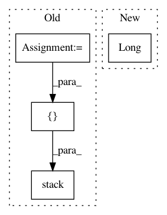

6ddf825a4aa1bcf3a35bba8d36bc433fe5ebaa39,torchsample/utils.py,,th_nearest_interp_3d,#Any#Any#,285
Before Change
// repeat coords along channel dim if not given that way
if coords.dim() == 2:
coords = coords.unsqueeze(0).repeat(input.size(0),1,1)
// take clamp of coords so they"re in the image bounds
xc = torch.clamp(coords[:,:,0], 0, input.size(1)-1)
yc = torch.clamp(coords[:,:,1], 0, input.size(2)-1)
zc = torch.clamp(coords[:,:,2], 0, input.size(3)-1)
// round to nearest coordinate
coords = torch.stack([xc.round().long(),
yc.round().long(),
zc.round().long()], 2)
// gather image values at coordinates
mapped_vals = torch.stack([th_gather_nd(input[i], coords[i])
for i in range(input.size(0))], 0)
return mapped_vals.view_as(input)
After Change
input_flat = th_flatten(input)
mapped_vals = input_flat[idx.long()]
return mapped_vals.view_as(input)
In pattern: SUPERPATTERN
Frequency: 3
Non-data size: 4
Instances
Project Name: ncullen93/torchsample
Commit Name: 6ddf825a4aa1bcf3a35bba8d36bc433fe5ebaa39
Time: 2017-04-24
Author: ncullen@Nicks-MacBook-Pro.local
File Name: torchsample/utils.py
Class Name:
Method Name: th_nearest_interp_3d
Project Name: kevinzakka/recurrent-visual-attention
Commit Name: d2b634744401fff8166fed16f47e3be9be94cd6d
Time: 2018-01-20
Author: kevinarmandzakka@gmail.com
File Name: modules.py
Class Name: glimpse_sensor
Method Name: denormalize
Project Name: kevinzakka/recurrent-visual-attention
Commit Name: 84d32df24d9b88464ed851dadda9bdd74ad67c5a
Time: 2018-01-24
Author: kevinarmandzakka@gmail.com
File Name: tests/test_retina.py
Class Name:
Method Name: denormalize